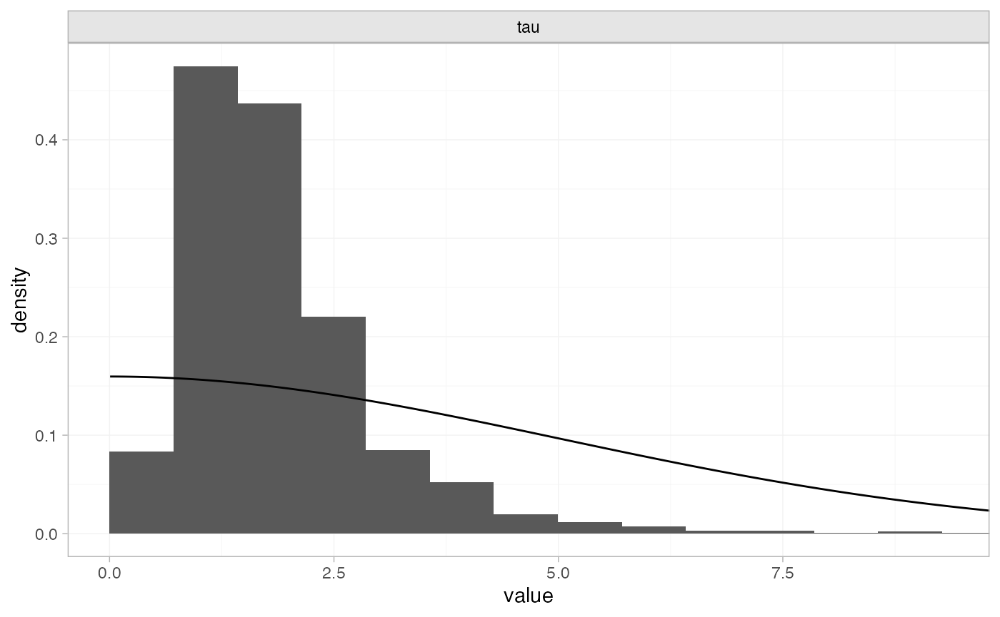

Example: White blood cell transfusion
Source:vignettes/example_transfusion.Rmd
example_transfusion.Rmd
library(multinma)
options(mc.cores = parallel::detectCores())#> For execution on a local, multicore CPU with excess RAM we recommend calling
#> options(mc.cores = parallel::detectCores())
#>
#> Attaching package: 'multinma'
#> The following objects are masked from 'package:stats':
#>
#> dgamma, pgamma, qgammaThis vignette describes the analysis of 6 trials comparing
transfusion of granulocytes (white blood cells) to control for
preventing mortality in patients with neutropenia or neutrophil
dysfunction (Stanworth et al. 2005; Turner et al.
2012). The data are available in this package as
transfusion:
head(transfusion)
#> studyc trtc r n
#> 1 Bow 1984 Transfusion 5 13
#> 2 Bow 1984 Control 4 11
#> 3 Herzig 1977 Transfusion 1 13
#> 4 Herzig 1977 Control 3 14
#> 5 Higby 1975 Transfusion 2 17
#> 6 Higby 1975 Control 14 19Turner et al. (2012) previously used this dataset to demonstrate the application of informative priors for heterogeneity, an analysis which we recreate here.
Setting up the network
We begin by setting up the network - here just a pairwise
meta-analysis. We have arm-level count data giving the number of deaths
(r) out of the total (n) in each arm, so we
use the function set_agd_arm(). We set “Control” as the
reference treatment.
tr_net <- set_agd_arm(transfusion,
study = studyc,
trt = trtc,
r = r,
n = n,
trt_ref = "Control")
tr_net
#> A network with 6 AgD studies (arm-based).
#>
#> ------------------------------------------------------- AgD studies (arm-based) ----
#> Study Treatment arms
#> Bow 1984 2: Control | Transfusion
#> Herzig 1977 2: Control | Transfusion
#> Higby 1975 2: Control | Transfusion
#> Scali 1978 2: Control | Transfusion
#> Vogler 1977 2: Control | Transfusion
#> Winston 1982a 2: Control | Transfusion
#>
#> Outcome type: count
#> ------------------------------------------------------------------------------------
#> Total number of treatments: 2
#> Total number of studies: 6
#> Reference treatment is: Control
#> Network is connectedMeta-analysis models
We fit two random effects models, first with a non-informative prior for the heterogeneity, then using the informative prior described by Turner et al. (2012).
Random effects meta-analysis with non-informative heterogeneity prior
We fit a random effects model using the nma() function
with trt_effects = "random". We use \(\mathrm{N}(0, 100^2)\) prior distributions
for the treatment effects \(d_k\) and
study-specific intercepts \(\mu_j\),
and a non-informative \(\textrm{half-N}(5^2)\) prior for the
heterogeneity standard deviation \(\tau\). We can examine the range of
parameter values implied by these prior distributions with the
summary() method:
summary(normal(scale = 100))
#> A Normal prior distribution: location = 0, scale = 100.
#> 50% of the prior density lies between -67.45 and 67.45.
#> 95% of the prior density lies between -196 and 196.
summary(half_normal(scale = 5))
#> A half-Normal prior distribution: location = 0, scale = 5.
#> 50% of the prior density lies between 0 and 3.37.
#> 95% of the prior density lies between 0 and 9.8.Fitting the RE model
tr_fit_RE_noninf <- nma(tr_net,
trt_effects = "random",
prior_intercept = normal(scale = 100),
prior_trt = normal(scale = 100),
prior_het = half_normal(scale = 5))Basic parameter summaries are given by the print()
method:
tr_fit_RE_noninf
#> A random effects NMA with a binomial likelihood (logit link).
#> Inference for Stan model: binomial_1par.
#> 4 chains, each with iter=2000; warmup=1000; thin=1;
#> post-warmup draws per chain=1000, total post-warmup draws=4000.
#>
#> mean se_mean sd 2.5% 25% 50% 75% 97.5% n_eff Rhat
#> d[Transfusion] -1.23 0.03 1.01 -3.49 -1.72 -1.15 -0.62 0.63 1057 1
#> lp__ -175.53 0.09 3.07 -182.43 -177.40 -175.29 -173.32 -170.52 1226 1
#> tau 1.89 0.03 1.06 0.57 1.16 1.63 2.34 4.64 1322 1
#>
#> Samples were drawn using NUTS(diag_e) at Mon Nov 13 17:07:55 2023.
#> For each parameter, n_eff is a crude measure of effective sample size,
#> and Rhat is the potential scale reduction factor on split chains (at
#> convergence, Rhat=1).By default, summaries of the study-specific intercepts \(\mu_j\) and study-specific relative effects
\(\delta_{jk}\) are hidden, but could
be examined by changing the pars argument:
The prior and posterior distributions can be compared visually using
the plot_prior_posterior() function:
plot_prior_posterior(tr_fit_RE_noninf, prior = "het")
The posterior distribution for the heterogeneity variance \(\tau^2\) is summarised by
Random effects meta-analysis with informative heterogeneity prior
Keeping the rest of the model setup the same, we now use an
informative \(\textrm{log-N}(-3.93,
1.51^2)\) prior for the heterogeneity variance \(\tau^2\). We can examine the range of
parameter values implied by this prior distribution with the
summary() method:
summary(log_normal(-3.93, 1.51))
#> A log-Normal prior distribution: location = -3.93, scale = 1.51.
#> 50% of the prior density lies between 0.01 and 0.05.
#> 95% of the prior density lies between 0 and 0.38.Fitting the RE model, we specify the log_normal prior
distribution in the prior_het argument, and set
prior_het_type = "var" to indicate that this prior
distribution is on the variance scale (instead of the standard
deviation, the default).
tr_fit_RE_inf <- nma(tr_net,
trt_effects = "random",
prior_intercept = normal(scale = 100),
prior_trt = normal(scale = 100),
prior_het = log_normal(-3.93, 1.51),
prior_het_type = "var")#> Warning: There were 1 divergent transitions after warmup. See
#> https://mc-stan.org/misc/warnings.html#divergent-transitions-after-warmup
#> to find out why this is a problem and how to eliminate them.
#> Warning: Examine the pairs() plot to diagnose sampling problemsBasic parameter summaries are given by the print()
method:
tr_fit_RE_inf
#> A random effects NMA with a binomial likelihood (logit link).
#> Inference for Stan model: binomial_1par.
#> 4 chains, each with iter=2000; warmup=1000; thin=1;
#> post-warmup draws per chain=1000, total post-warmup draws=4000.
#>
#> mean se_mean sd 2.5% 25% 50% 75% 97.5% n_eff Rhat
#> d[Transfusion] -0.79 0.01 0.46 -1.78 -1.05 -0.76 -0.48 -0.01 1400 1
#> lp__ -180.28 0.07 2.88 -186.79 -181.98 -179.99 -178.19 -175.52 1474 1
#> tau 0.50 0.01 0.37 0.05 0.20 0.43 0.71 1.40 1219 1
#>
#> Samples were drawn using NUTS(diag_e) at Mon Nov 13 17:07:58 2023.
#> For each parameter, n_eff is a crude measure of effective sample size,
#> and Rhat is the potential scale reduction factor on split chains (at
#> convergence, Rhat=1).By default, summaries of the study-specific intercepts \(\mu_j\) and study-specific relative effects
\(\delta_{jk}\) are hidden, but could
be examined by changing the pars argument:
The prior and posterior distributions can be compared visually using
the plot_prior_posterior() function:
plot_prior_posterior(tr_fit_RE_inf, prior = "het")
Note: The heterogeneity variance \(\tau^2\) is plotted here since the prior was specified on \(\tau^2\).
The posterior distribution for the heterogeneity variance \(\tau^2\) is summarised by